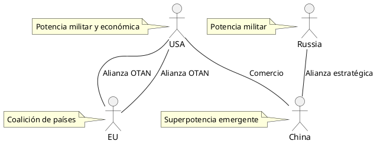

Mi Blog con Emacs y Esteroides
Emacs, IA y Linux: Poder y Simplicidad en tu Flujo de Trabajo
¡Hola! Este es Emacs con Esteroides, un blog donde combino la potencia de Emacs y Org Mode con análisis profundos sobre temas como geopolítica, tecnología y productividad. Aquí no solo encontrarás reflexiones, sino también demostraciones prácticas de cómo uso herramientas como Org Mode para estructurar ideas, generar diagramas y publicar contenido estático. Mi objetivo es explorar el mundo desde un teclado y compartir contigo el proceso.
2025-04-11-cronología-y-desarrollo-de-emacs
En la sección Contacto, se ha incluido una opción para comentarios mediante Disqus. ¡Déjame tu opinión o consulta ahí!

A continuación, te presento mis publicaciones más recientes:
Suscribirse al Feed RSS | Mapa del Sitio
© 2025 M.Castillo | Hecho con ❤️ en Emacs y org-static-blog
📊 Estadísticas